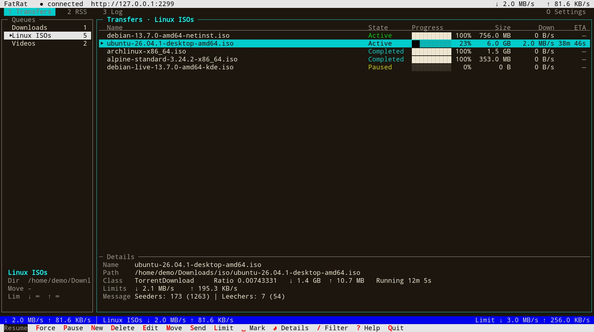

fatrat-tui is a full-screen terminal client for FatRat. It manages transfers and queues, and shows transfer details, the RSS feeds and rules, the log, the settings and the extensions. It works over SSH, and it can run at the same time as the desktop app and the web interface, against the same FatRat.
fatrat-tui talks to FatRat through its REST API, either on a unix socket or through the web interface. To set up FatRat on a server, see Running on a Server.
Run it without options:
fatrat-tui
By default (--mode auto) it tries these, in this order:
$XDG_RUNTIME_DIR/fatrat/rest.sock. A unix socket needs no password.fatrat-tui reads the port, HTTPS and the password from FatRat's settings file, and connects to 127.0.0.1.fatrat-nogui, or fatrat) on the unix socket. This server uses your normal FatRat settings and transfers.If you run the desktop app, turn on its web interface, so that fatrat-tui connects to it instead of starting a server of its own.
Other modes skip some of these steps:
--mode local--mode socket--no-start--which prints how fatrat-tui would connect, and why, and then exits. It doesn't start or change anything. For example:
$ fatrat-tui --which Unix socket /run/user/1000/fatrat/rest.sock: nothing is listening Settings /home/you/.config/Dolezel/fatrat.conf: the web interface is turned off Starting a FatRat server of our own on the unix socket /run/user/1000/fatrat/rest.sock (it uses your normal FatRat settings and transfers)
Give the address of FatRat's web interface with --url, or in the FATRAT_URL environment variable:
fatrat-tui --url https://server.example.com:2233
--url takes http://host:port, https://host:port or unix:/path/to.sock. It can't be combined with any --mode other than url.
Over HTTP or HTTPS, fatrat-tui needs the web interface password. It takes the first of these:
--password-file file: the first line of the file. The file must not be readable or writable by the group or by others; otherwise fatrat-tui refuses it.FATRAT_PASSWORD environment variable.--password-prompt always asks, even when one of the others has a password. A user name and password written into the URL are ignored.
Over plain http:// to another computer, fatrat-tui warns that the password travels unencrypted. Use https:// if the server offers it.
When the server's certificate isn't trusted (for example, a self-signed one), fatrat-tui shows its SHA-256 fingerprint and lets you choose Trust for this session, Remember this fingerprint or Quit. Remembered fingerprints are stored in ~/.config/fatrat/tui.conf. --insecure turns off the certificate check.
--socket path uses a different unix socket than $XDG_RUNTIME_DIR/fatrat/rest.sock, for both finding a running server and starting one. For example, for the system service described in Running on a Server:
sudo -u fatrat fatrat-tui --socket /run/fatrat/rest.sock
These options affect a server that fatrat-tui starts:
--server-bin pathfatrat-nogui or fatrat, next to fatrat-tui or in PATH.--config filefatrat-tui reads it to find a running FatRat, and a server it starts uses it.--stopfatrat-tui started earlier, and exit.While the server starts, fatrat-tui shows the path of its log, ~/.local/state/fatrat/tui-server.log.
Press Q (or Ctrl-C) to quit. If fatrat-tui started the server itself, quitting stops it too. If transfers are active, it asks first: Keep it running (downloads continue), Stop the server and quit or Cancel. A server that you keep running is found on the unix socket the next time you start fatrat-tui.
The terminal must be at least 60 columns by 16 lines.
fatrat-tui is connected to, and the total download and upload speeds.The Queues pane on the left lists the queues with the number of transfers in each. Below the list it shows the current queue's default directory (Dir), the directory finished transfers are moved to (Move), the watch folder (Watch) and the speed limits (Lim). A queue whose watch folder has a problem gets a ! before its name, and the Watch line names the problem.
The Transfers pane on the right lists the transfers of the current queue with their name, state, progress, size, download speed and time left. When the terminal is at least 22 lines high (23 when it is narrower than 100 columns), a Details strip at its bottom shows the selected transfer's name, path, class (the engine), speed, limits, message and comment.
In a terminal narrower than 100 columns, the Queues pane is replaced by a Queue line above the transfers; ← and → switch to the previous and next queue.
Enter opens the details view of the selected transfer. It has the tabs Info, Files (for torrents only) and Log, and replaces the transfer list until you press Esc.
The Feeds pane on the left and the Download rules pane on the right. See RSS for what feeds and rules do.
FatRat's global log. By default it follows the end of the log. Press T to see the log of the transfer selected on the Transfers tab instead, and T again to go back.
O or F2 opens the settings that the connected FatRat offers, such as RSS, Scheduler, BitTorrent and Web Interface. Pages it can't show say so. X or F4 opens the Python extensions. Its sections are Installed, Available and Repositories; Tab switches between them.
Letter keys work in either case. Press ? or F1 for the list of keys inside fatrat-tui.
| Key | Action |
|---|---|
1, 2, 3 | Transfers, RSS and Log tab |
F2 or O | Settings |
F4 or X | Extensions |
| Tab, Shift-Tab | Next and previous pane |
↑ or K, ↓ or J | Up and down in a list |
| ←, → | Queues pane, Transfers pane (in a narrow terminal: previous and next queue) |
| PgUp, PgDn, Home, End | Page up, page down, first, last |
/ | Filter the transfers by name |
| Esc | Back; on the Transfers tab, clear the filter, then the marks |
F1 or ? | Help |
Q, Ctrl-C | Quit |
| Ctrl-L | Redraw the screen |
Most keys act on the marked transfers, or on the selected one when none is marked.
| Key | Action |
|---|---|
R | Resume |
F | Force resume |
P | Pause |
N | New transfer |
D | Delete: asks whether to keep the files or delete them too |
E | Edit the transfer's properties |
M | Move, then T to the top, U up, D down or B to the bottom |
[, ] | Move up, move down |
S | Send to another queue |
L | Speed limit |
| Space | Mark or unmark |
A | Mark all or none |
| Enter | Open the details view |
| Key | Action |
|---|---|
N | New queue |
E | Edit the queue |
D | Delete the queue |
[, ] | Move the queue up, down |
L | Queue speed limits (opens the queue editor) |
| Enter | Open the queue (focus its transfers) |
| Key | Action |
|---|---|
| Tab, Shift-Tab | Next and previous tab |
Esc or B | Back to the list |
On the Files tab of a torrent, priority changes take effect only when you apply them:
| Key | Action |
|---|---|
+ or = | Raise the file's priority |
- | Lower the file's priority |
S | Skip the file, or stop skipping it |
A | Download all files (stop skipping) |
| Enter | Apply the changes |
| Key | Action |
|---|---|
N, E, D | New, edit, delete a feed or a rule |
R | Refresh the feeds now |
T | Rules: test a regular expression |
W | Rules: the downloaded episodes |
| Tab | Switch between feeds and rules |
| Key | Action |
|---|---|
F | Follow the end of the log, on or off |
/ | Search |
N | Next match |
G, End | Top, bottom |
T | Log of the selected transfer, or back to the global log |
In a terminal that supports the xterm mouse protocol, you can use the mouse:
--no-mouse turns mouse support off, so that the terminal's own mouse handling, such as selecting text, works as usual.
N and E open forms. See Transfers and Queues for what the fields mean.
fatrat-tui runs, such as a .torrent file, the file is uploaded to FatRat.Speed limits are in KB/s; 0 means no limit.
| Key | Action |
|---|---|
| Tab, Shift-Tab, ↑, ↓ | Next and previous field |
| ←, → or Space | Change a choice (shown as ◂ … ▸) |
| Space | Tick or untick a check box |
| Ctrl-A, Ctrl-E | Start, end of the text |
| Ctrl-U | Clear the field |
| Ctrl-K | Delete to the end |
| Ctrl-W | Delete the word before the cursor |
| Ctrl-B | Browse for a directory |
| Enter | Save (or Add, Create) |
| Esc | Cancel |
Ctrl-B browses the directories on the computer where FatRat runs. In the New transfer form it fills Save to; in the queue form it fills the directory field you are in (Default directory, Move finished to or Watch folder). In the directory browser, Enter opens a directory, Backspace goes up, C chooses the current directory, H shows or hides hidden directories, and Esc cancels.
fatrat-tui draws boxes, arrows and progress bars with Unicode characters. It switches to plain ASCII characters when you give --ascii, or when the locale's character set isn't UTF-8 (when the locale set by LC_ALL, LC_CTYPE or LANG doesn't name UTF-8, or isn't installed). It uses colours when the terminal supports them.
The full reference is man fatrat-tui.